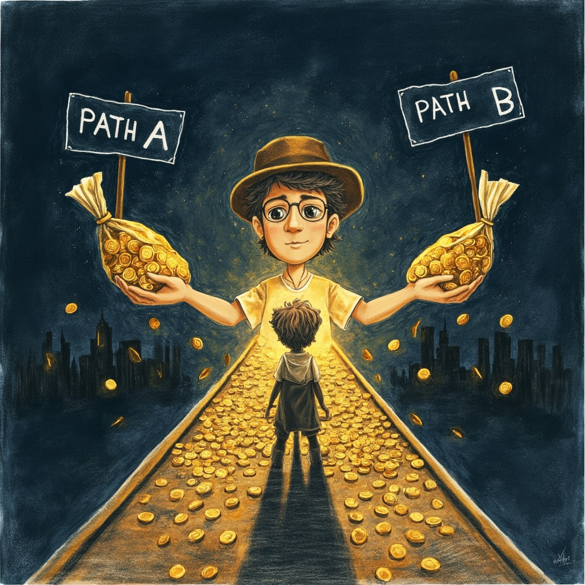
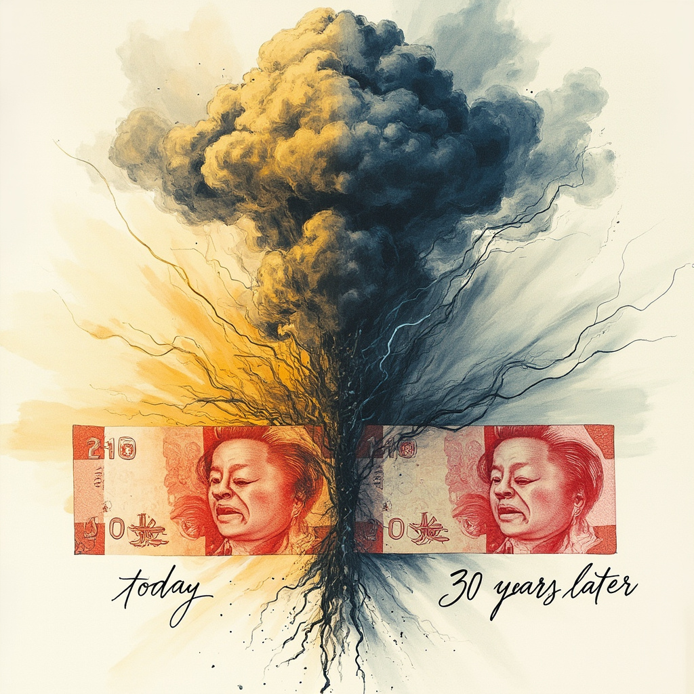
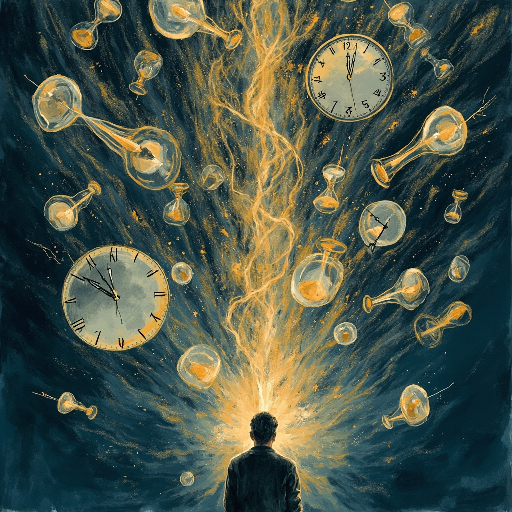

深夜一点，写完最后一个bug，突然emo了
我盯着屏幕上commit的绿勾，脑子里突然蹦出一个问题：我今晚熬的这3小时，到底值不值？
- 如果用来睡觉，明天精神好一整天
- 如果用来刷LeetCode，下个月跳槽能多要5k
- 如果用来陪女朋友……emmm这个就不算了
这就是我今天学到的第一个金融思维——机会成本。

机会成本：选A时，放弃的B的最好收益
很多人以为机会成本=花出去的钱。错！真正的高手看三层：
- L1小白层：我花了多少钱？（188万买房，花了188万）
- L2入门层：我放弃了多少利息？（放国债一年6.6万）
- L3真谛层：5年后总资产差多少？（差33万+）
算账：188万放活期0.2%，放国债3.5%，光利息每年就少赚6.2万。10年就是62万，够付一套小城市房子的首付了。
沉没成本：最该从决策公式里删掉的词
我以前常干这种事：
- 电影烂片，心想"票都买了"硬看到结尾
- 股票套牢，心想"都亏30%了"死活不卖
- 这份工作干得想吐，心想"都干了3年了"继续熬
真相：已经花出去的钱不会因为你的纠结回来一分。决策只看未来，不看过去。
举个扎心的例子：分期买手机，表面手续费7.5%，实际年化13.6%——比房贷贵4倍，钱去换一台3个月就贬值的电子垃圾。
货币时间价值：今天的100块≠明年的100块
这节课让我后背发凉的一道算术题：
- 188万 × 7% × 30年复利 = 1431万（账面）
- 按3%通胀折现 = 472万（实际购买力）
- 中间被通胀吃掉的 = 959万
房贷30年总还款170万，按3%通胀折现只值今天的69万——你今天借100万，30年后"真实"只还了69万，净赚31万。
所以房贷的正确策略是：长贷长还。通胀是欠债人的朋友。

隐性机会成本：账本看不见的，往往最贵
这部分最扎心。算一笔我的隐性账单：
- 通勤2小时/天：8.5万/年 + 3个月生命
- 一周5次会议：4.5万/年 + 31个工作日
- 刷手机1小时/天：9.4万/年 + 365小时
- 总账单：22.4万/年 + 10个月生命
程序员老觉得自己时薪高，但通勤+会议+摸鱼一扣，时薪直接腰斩。
我以前觉得"我没花钱啊"——"我没花钱"不等于"我没付出"。

万用决策公式：一张图终结纠结
今天学完，我给自己立了一个决策公式，每次纠结就问自己：
"如果我现在没投入任何成本，我会做这个选择吗？" 会 → 继续；不会 → 该止损就止损。
升级版问法："这1小时/1年的隐性账本是什么？"
把"我投了这么多"从决策公式里删掉——你会立刻发现，选择多了一大截。
今天的金句（建议截图）
沉没成本是已经发生的不用纠结，机会成本才是你的未来选项。
30岁的50万能做40岁100万做不了的事——同样的钱在不同年龄的"使用价值"完全不同。
188万不是钱，是30年后的1431万——你不缺钱，你缺给钱足够多的时间。
账本看不见的，往往是最贵的。